Beverages
|
||
| ALL COCKTAILS €7.95 | ||
|---|---|---|
| INTERNATIONAL COCKTAILS | ||
|
COSMOPOLITAN Vodka, Triple Sec, cranberry and fresh lime juice. |
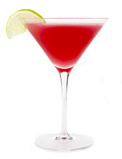 | |
|
FROZEN MARGHERITA Triple Sec, Grand Marnier, lime juice. |
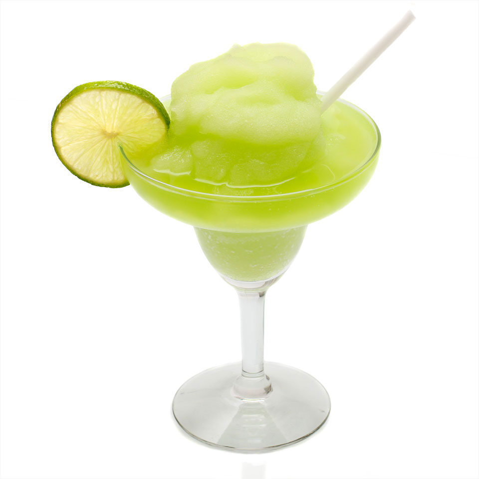 | |
|
PINA COLADA Coconut rum, coconut syrup, pineapple juice, cream. |
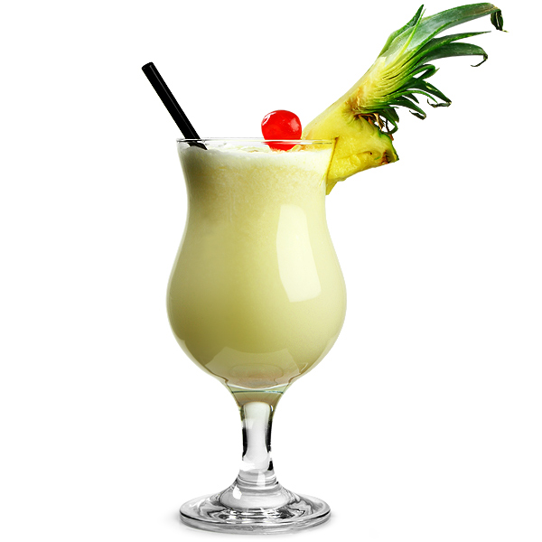 | |
|
MOJITO White rum, fresh garden mint leaves, sugar, fresh lime juice. |
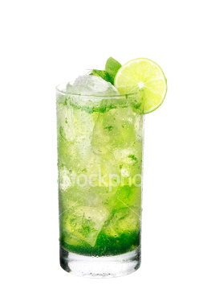 | |
|
SEX ON THE BEACH Vodka, Peach Schnapps, orange juice, Grenadine. |
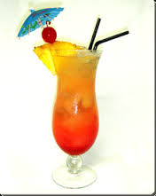 | |
| ITALIAN COCKTAILS | ||
|
BELLINI Prosecco with peach nectar. |
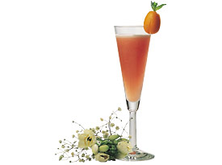 | |
|
ROSSINI Prosecco, fresh strawberry. |
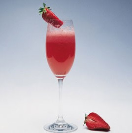 | |
|
NEGRONI Gin, Campari, Martini Rosso. |
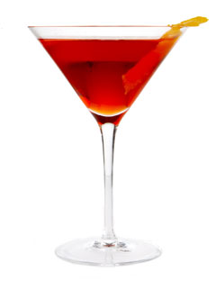 | |
|
APEROL SPRITZ Prosecco with Aperol. |
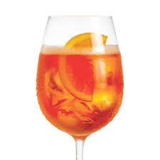 | |
|
AMARETTO SOUR Amaretto, orange juice, grapefruit juice. |
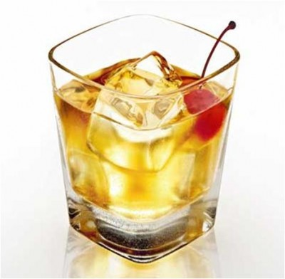 | |
Red Wine List |
||
| Our wines have been sourced directly from quality family vineyards throughout Italy. Generations of passion, enthusiasm and character are reflected in our wines. | ||
| House Wine - Red | ||
|
ANTICO BLASONE ROSSO - Tuscany Grapes: Sangiovese 80%, Cannaialo 20% Bright ruby red, round and harmonious taste in the mouth 12% |
€20.50 | 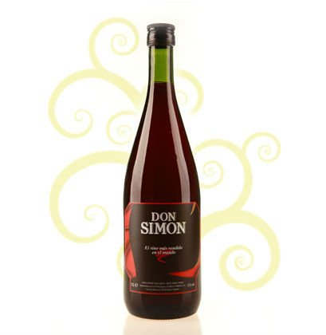 |
|
CENTALATO TOSCANA ROSSO IGT - Tuscany Grapes: Sangiovese 80%, Cannaialo 20%. Bright ruby red, it is persistent with hints of violets and fresh fruit, in the mouth is round and balanced with good body and soft tannins 12% |
€24.50 | 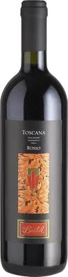 |
|
HOUSE RED BY THE GLASS |
€5.85 | 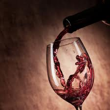 |
|
500ml CARAFE |
€14.00 | 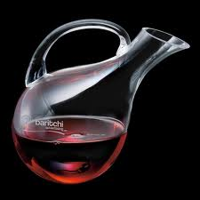 |
| Wine by the glass - Red | ||
|
ANTICO BLASONE ROSSO - Tuscany A stylish house red, elegant, very smooth. Served by the glass. |
€5.85 | 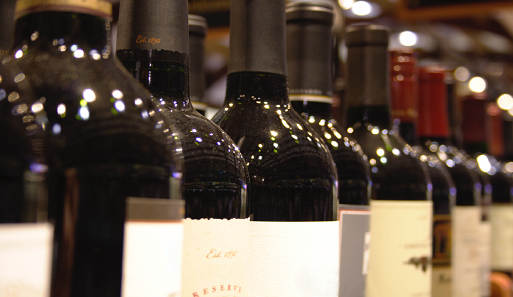 |
|
PRIMITIVO - Salento A stylish red, smooth and very elegant. Served by the glass. |
€6.75 | 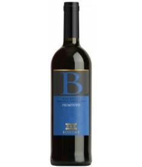 |
|
LAVIGNONE BARBERA D'ASTI D.O.C. - Piemonte Grape: Barbera. Dry red with red ruby color, refinement in a steel vats for a period of 9 months, intense and charming with complex structure 13,5% Served by the glass. |
€6.95 | 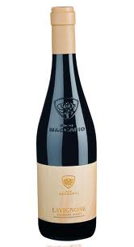 |
|
ASangiovese - Tuscany |
€6.20 | 
|
| Half Bottle Selection - Red | ||
|
CHIANTI CLASSICO - 1/2 Bottle A ruby red colour with a soft, velvety texture. |
€17.15 | 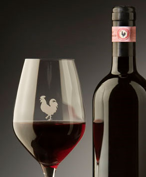 |
|
NERO D'AVOLA - 1/2 bottle Sicilian red, with a perfume of black berry & cherry. Full bodied. |
€16.95 | 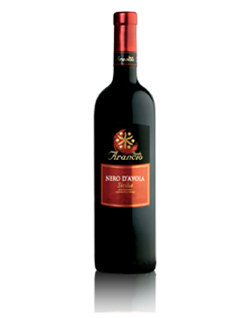 |
| Italian - Red | ||
|
RECIOTO DELLA VALPOLICELLA CLASSICO D.O.C. 2007 - Tuscany Grapes: Corvina 60%, Rondinella 20%, Molinara 5%, local grapes 15%. Rich garnet red, with floral, fruity aromas of violet and wild cherry. Velvety, sweet, soft & delicate. Full bodied. 12.5% |
€33.95 | 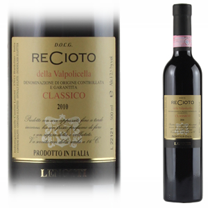 |
|
BARDOLINO CLASSSICO D.O.C.2007 - Verona Grapes: Corvina 60%, Rondinella 25% ,Molinara and Rossara 15%. Refined 2 months in stainless steel tanks, and 2 months in the bottle. Bright ruby red colour with notes of violet and iris when young, followed by fruity notes of cherry and raspberry. In the mouth is dry, full-flavoured, pleasantly bitter and light. 12% |
€26.95 | 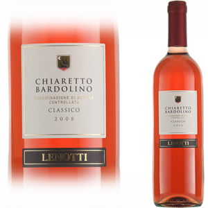 |
|
CHIANTI CLASSICO D.O.C.G. 2009 - Tuscany Sangiovese 100%, late harvest of September, Very deep ruby red, Intense & fruity with cherry & slight spiciness. |
€29.95 | 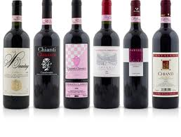 |
|
CHIANTI CLASSICO RISERVA 2005 - Tuscany Sangiovese 100%, The best harvest late September, Intense ruby red, complex, elegant with great body, persistent, shows it's maturity. RRP 45.95 |
€40.95 | 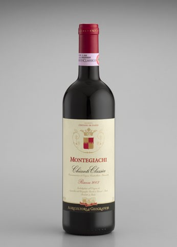 |
|
PRIMITIVO I.G.T. - Salento Grape, Primitivo 100%. Intense red color with a vein of violets and red berries. its taste is velvety and structureD(13%) |
€25.95 | 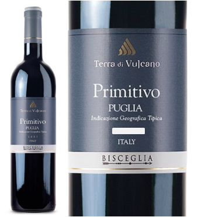 |
|
MONTECORNA VALPOLICELLA RIPASSO D.O.C. - Veneto Grapes: Corvina 70%, Rondinella 20%, Molinara 10% - Special characteristic comes from refermenation on Amarone marc still rich with wine. Soft and seductive with raisin and plum flavours.13.5% |
€35.95 | 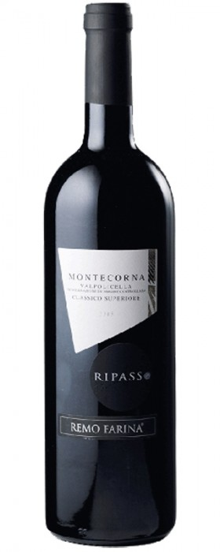 |
| Italian Premium Aged - Red | ||
|
AMARONE DELLA VALPOLICELLA CLASSICO D.O.C. 2005 - Veneto Grapes, Corvina 70%, Rondinella 20%, Molinara 10% Refined 3 years in the Slovenian oak barrel, and 1 year in bottle its color is garnet red, with orange edge. Spicy, with notes of cherry, blackcurrants and cocoa. In the mouth is warm full bodied, silky, elegant and well balanced 14,5% |
€50.95 | 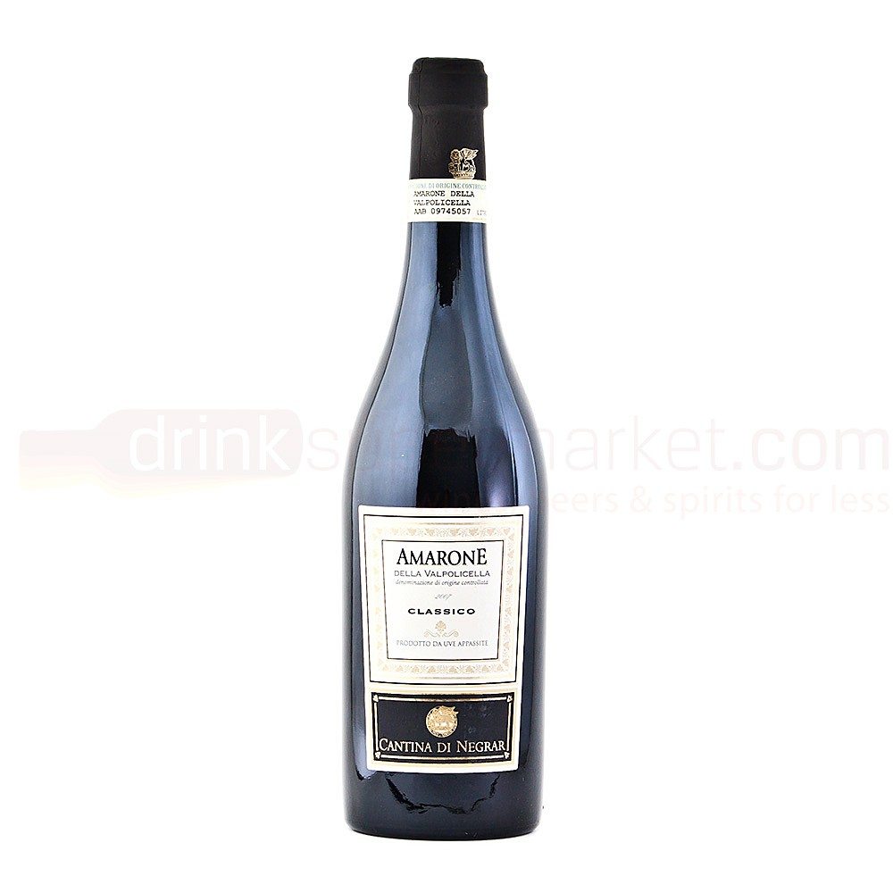 |
|
BAROLO - PAESI TUOI 2006 - Piemonte Grape, Nebbiolo 100% - Garnet red velvet. with orange after a few years in bottle. Full body in the mouth is sapid with harmonious tannins 13,5% |
€50.95 | 
|
|
BRUNELLO DI MONTALCINO D.O.C.G 2005 - Tuscany Grapes: Sangiovese 100% - Regarded as the Rolls Royce of Tuscan wines, bright ruby red, in the mouth is warm, intense robust and lively 12% |
€89.95 | 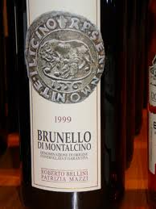 |
|
ROSSO DEL CONTE D.O.C. - Sicilia The Grandfather of the famous Nera d’Avola of Regaleali estate. Deep red ruby colour turning into violet ageing. The bouquet is rich and ample with notes of cherry, marasca, walnut husk, wild berries, vanilla and cinnamon. |
€89.95 | 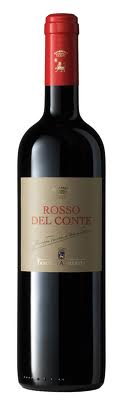 |
White Wine List |
||
| Our wines have been sourced directly from quality family vineyards throughout Italy. Generations of passion, enthusiasm and character are reflected in our wines. | ||
| House Wine - White | ||
|
ANTICO BLASONE BIANCO - Tuscany Grapes: Trebbiano 80%, Malvasia 20% - Dry white with straw yellow colour, fresh and soft, with good aromatic persistence 11.5% |
€20.50 | 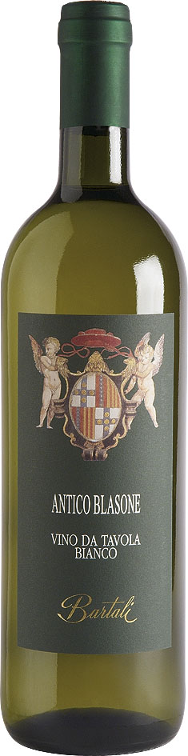 |
|
CENTALTO TOSCANA BIANCO I.G.T - Tuscany Grapes: Trebbiano 80%, Malvasia 20% - Straw Yellow colour, the flavour is fresh and soft, with intense notes of white flowers. 11.5% |
€24.50 | 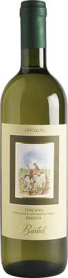 |
|
500ml CARAFE |
€14.00 | 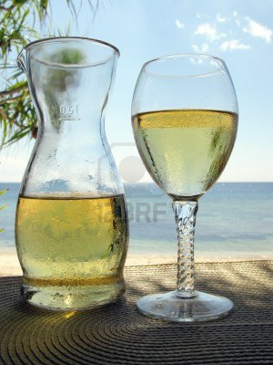 |
| Wine by the glass - White | ||
|
ANTICO BLASONE BIANCO HOUSE WINE Grapes: Trebbiano 80%, Malvasia 20% - Dry white with straw yellow colour, fresh and soft, with good aromatic persistence 11.5% |
€5.60 | |
|
VIGNA ANGELICA OTREPO' PAVESE PINOT GRIGIO D.O.C. Straw yellow, smooth taste and balanced 12.5% |
€6.95 | |
|
ESTROSA MONFERRATO D.O.C. 2010 Grapes: Sauvignon blanc, Chardannay - Dry white with straw yellow color, intense with pleasant flowered note, full flavour with a remarkable Freshness. 12% |
€6.95 | 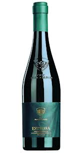 |
| Half Bottle Selection - White | ||
|
PINOT GRIGIO - 1/2 Bottle |
€17.50 | 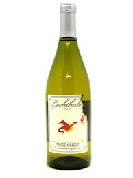 |
| Italian - White | ||
|
ESTROSA MONFERRATO D.O.C. 2010 - Piemonte Grapes: Sauvignon blanc, Chardannay - Dry white with straw yellow colour, intense with pleasant flowered note, full flavour with a remarkable Freshness. 12% |
€29.95 | 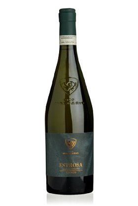 |
|
ORVIETO D.O.C. - Tuscany Grapes: Trebbiano Toscana 60%, Cannaiolo Bianco 20%, grechetto 20% - Light golden yellow, it is pleasantly delicate with hints of fresh fruit. The flavour is dry, fresh, slightly bitter, full and velvety. 12% |
€20.95 | 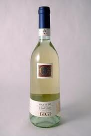 |
|
VERNACCIA DI SAN GIMIGNANO D.O.C.G. - Tuscany Grape: Vernaccia di San Gimignano 100% - A Tuscan favourite Straw yellow color, fresh and persistent, with a characteristic almond aftertaste 12% |
€27.95 | 
|
| Sparkling & Rose | ||
|
PROSECCO Dry, lemony & bubbly, this is Italy's answer to refreshing, well-made, sparkling wine. It is crisp and clean with small bubbles and combines nicely with seafood, especially calamari, salads, prawns and pastas. |
€39.95 | 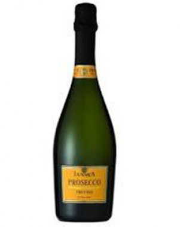 |
|
ROSE - Salentino Fragrant, smooth, soft, fruity and dry. |
€20.95 | 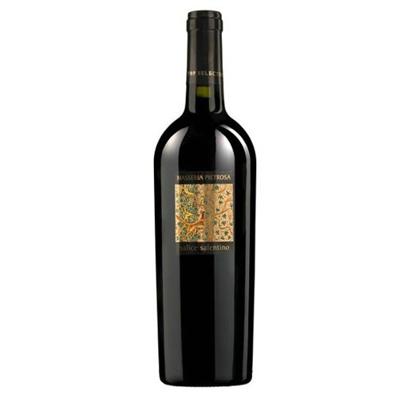 |
| Champagne | ||
|
Heidseick Monopole |
€73.95 | 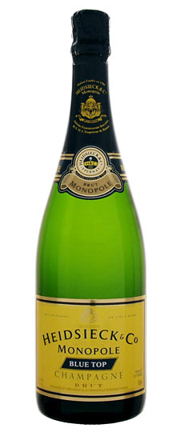 |
Bon Apetito!!! | ||